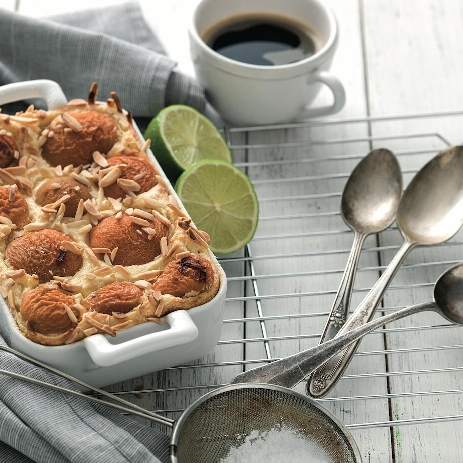

Krupicový nákyp podľa @billa_sk — Normy Jedál
Vôňa krupice nám pripomína detstvo. Skúsili ste už však krupicový nákyp?
http://bit.ly/krupicovy_nakyp
#BillaSlovensko #KrupicovyNakyp #SpomienkaNaDetstvo #receptykulinarium #magazinkulinarium